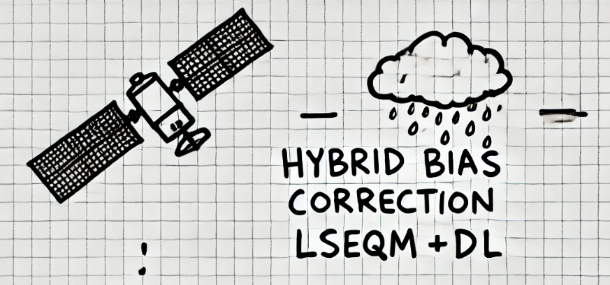

FAQ
A mix of practical “how do I” questions and the methodological questions that come up most often when someone first looks at the results. Honest answers, including the limitations.

Basics
What is a dekad and why use it?
A dekad is a 10-day window. Each calendar month has three: days 1-10, 11-20, and 21-end (28 to 31). That gives 36 dekads per year.
Bias correction parameters are fit independently per dekad to capture the wet-dry seasonal cycle. A single set of annual parameters washes out the monsoon and produces noticeably worse skill in tropical regions. Daily fitting would be over-parameterised given the available sample size; monthly fitting would smear the rapid onset and retreat of monsoon rains. Dekads are the WMO standard for agricultural-meteorological products and a reasonable middle ground.
Why CPC-UNI and not just gauge data directly?
CPC-UNI is a gauge-based gridded product that fills in the spaces between stations using a deterministic interpolation. The framework needs a gridded reference at every cell, every day - using raw gauge data would require interpolating ourselves, which is exactly what CPC has already done at the global scale.
Raw BMKG gauge data is used independently in station validation as a held-out check on the correction. That validation is what makes the framework’s evaluation honest.
What is the difference between LS, LSEQM, and LSEQM+DL?
| What it corrects | How | |
|---|---|---|
| LS | The mean | Multiplies IMERG by CPC_mean / IMERG_mean per dekad per pixel |
| LSEQM | The full distribution shape | LS + Empirical Quantile Mapping (Gamma body) + Generalized Pareto tail |
| LSEQM+DL | The spatial pattern of extremes | LSEQM + a CNN refinement, blended back via station-density confidence |
LS is the cheapest and most transparent. LSEQM is what does most of the distributional work. LSEQM+DL adds a spatial polish on top in gauge-dense areas.
Should I run this on Colab or locally?
Colab, almost always. TensorFlow is notoriously fragile to install locally - on Windows it needs specific Visual C++ runtimes, on WSL it can hit cannot enable executable stack, on Apple Silicon you have to navigate tensorflow-metal, on Linux GPU you have to match an exact CUDA toolkit to the TF version. On Colab none of that is your problem: TensorFlow is pre-installed, the GPU is provisioned, and the framework’s CNN step works out of the box.
Reach for a local install only if you have a working TensorFlow environment already, or if your data is too sensitive to upload to Drive. If you do install locally, verify TF first with python -c "import tensorflow as tf; print(tf.__version__); print(tf.config.list_physical_devices())" - a broken TF will let LS and LSEQM run but quietly fail the LSEQM+DL step. See Installation and Troubleshooting for the failure modes.
Do I need a GPU?
No for the Bali example (CPU finishes in ~15 minutes). For the full Indonesia run, training 36 dekadal CNN models on CPU takes several hours; a GPU brings it down to about 30-60 minutes. The CNN is small (two Conv2D layers + a Flatten -> Dense bottleneck). Colab’s free GPU runtime is enough for the Bali example and most regional runs.
What’s the input data?
- IMERG Late Run V07 (NASA GPM) - the satellite product being corrected.
- IMERG Final Run V07 - a gauge-adjusted satellite product, used only as a comparison baseline in Taylor diagrams.
- CPC-UNI (NOAA PSL) - the gauge-based reference. Both at 0.5 deg native and downscaled to 0.1 deg.
- BMKG station observations - 180 stations across Indonesia (4 in the Bali bundle), used only for independent validation.
See Data Model for the full table.
How do I switch from Indonesia to a different region?
Edit the CONFIG_FILE toggle at the top of each notebook (nb02-nb06) to point at your config, swap the input_files paths in that config, and adjust aoi, region_mapping, and station_density to your network. Detailed recipe in AOI Setup.
Methodology and honesty
Why is correlation often below 0.5 even after correction? Is this acceptable?
Yes, and it’s the most important caveat to understand.
Daily precipitation is a notoriously low-correlation field. The processes that produce rain on a given day at a given pixel are partly stochastic - even a perfect model would not reproduce the exact daily values, because the “ground truth” daily field itself has measurement uncertainty (CPC interpolates from sparse stations) and the satellite retrievals have their own retrieval error envelope.
What bias correction can fix is the systematic part: the long-term mean, the distribution shape, the categorical wet-dry behaviour. It cannot fix the daily timing of individual rain events that satellite missed entirely.
So a Pearson r of 0.3-0.5 against daily gauge observations is normal for corrected satellite precipitation at daily resolution. The framework reports it honestly; we do not aggregate to monthly to inflate the headline number. Look at the distribution and temporal components of the CQI to see what the correction is actually moving.
Why does LSEQM+DL look almost identical to LSEQM in my AOI?
Most likely the station-density confidence mask is returning your pixels to LSEQM. The DL contribution is gated:
effective_alpha = 1.0 - confidence × (1.0 - blend_alpha)When confidence == 0 (no nearby stations), effective_alpha == 1.0, output equals LSEQM exactly. Open output/station_density/confidence_mask_station_density.nc4 and look at the confidence values across your AOI - if most of it is near zero, the DL is intentionally silent.
This is a design feature: where there is no ground truth to validate against, the framework does not invent improvements.
Does this work for sub-daily timescales (hourly, 30-minute)?
No. The framework is daily-only. Three reasons:
- The dekad parameter-fitting strategy assumes enough samples per cell per dekad (~220 daily samples for 22 years; sub-daily would push this up but the parameter would be unchanged because the dekad windowing is a property of the meteorology, not the sampling).
- CPC-UNI is a daily product. Any sub-daily reference would require a different gridded product (e.g. ERA5 hourly), which has its own biases.
- The diurnal cycle of precipitation is highly local; a single per-dekad correction parameter cannot capture it.
For sub-daily applications, look at the GPM Late Run’s native 30-minute product and consider a different correction approach (e.g. quantile mapping per hour-of-day per dekad - large parameter explosion).
Can I use this for snow?
The framework is designed for liquid precipitation. IMERG itself has a known low bias over snow surfaces (the microwave retrievals struggle there), and CPC-UNI gauge data in snow regions has under-catch issues. The framework will run on snow regions and produce a corrected NetCDF, but the underlying assumption (that the bias is correctable with a stationary distributional model) is on weaker ground.
If snow is your target, the literature on snowfall bias correction has different methods (e.g. SWE-based approaches) that are more appropriate.
Why CNN and not U-Net / transformer / diffusion model?
The CNN was the simplest architecture that demonstrably moved the score on validation. We tested a U-Net during development and got similar skill at higher computational cost; the bottleneck for further improvement is not the network architecture but the training-data quality (how well CPC represents the truth in gauge-sparse areas).
A U-Net or attention-based model would help if we had per-station temporal data densely enough to learn spatial patterns from scratch. We don’t. The current CNN is intentionally conservative; replacing it with a heavier architecture is in the Changelog backlog for when training data improves.
Why per-dekad and not a single CNN with seasonal embedding?
Same reason as why parameter fitting is per-dekad: the sample size per cell per dekad is modest, and the dekad windowing is small enough that within-dekad variability is the dominant signal. A single CNN trained across all 36 dekads with a seasonality embedding is on the backlog; it would reduce the model count from 36 to 1 and might enable richer architectures, but the per-dekad approach is what was validated in the paper.
Is the framework appropriate as input to hydrological models?
Depends on the model:
- Lumped or daily semi-distributed (e.g. SWAT in daily mode, GR4J) - yes. Corrected daily precipitation at 0.1 deg is exactly what these models want.
- Event-based or sub-daily distributed (e.g. HEC-HMS for flood forecasting) - the framework outputs daily totals, not sub-daily intensity. You would need to disaggregate with a separate model.
- Snow-driven catchments - see the snow question above; use with extra caution.
Always run a sensitivity test of your hydrological model against both raw IMERG and LSEQM+DL before adopting the corrected product operationally.
How do I know if my AOI has enough stations for the confidence mask to be meaningful?
Open output/station_density/confidence_mask_station_density.nc4 and inspect the spatial distribution of confidence values. Rules of thumb:
- If less than 10% of your AOI has
confidence > 0.5, the DL stage is barely active anywhere. Consider loweringsaturation_countfrom 3 to 2, or accept that LSEQM+DL ≈ LSEQM for your region. - If essentially the whole AOI has
confidence == 1.0, your network is dense enough thatsaturation_countmay be too low - the DL is acting uniformly when you might want spatial weighting. Consider raising it. - The Bali example sits at confidence around 0.4-0.8 in southern Bali (4 stations clustered there) and near zero in the north. This is the regime where the confidence mask is most visible in the output.
Why don’t you perform a formal sensitivity analysis on blend_alpha, gpd_threshold_percentile, and saturation_count?
These three parameters were chosen by inspection rather than formal optimisation. We acknowledge this as a limitation in the paper and in this documentation. A formal sensitivity sweep is on the Changelog backlog for the next release.
The honest answer is: the sensitivity surface is not flat - small changes in these parameters move CQI by a few percentage points in different ways across different regions. A region-by-region optimisation would be more rigorous than a single global setting, but adds complexity to the framework and shifts the “ground truth” problem onto the user’s choice of regional weighting.
What happens in a region with monsoon onset variability that breaks the fixed dekad calendar?
The dekad windowing is fixed to calendar days (1-10, 11-20, 21-end of month). If your region’s wet-season onset shifts by ~2 weeks year-to-year, individual dekadal fits will be noisier because the dekad will sometimes catch onset days and sometimes not.
Mitigations:
- Use the temporal QA component to identify which dekads have the most year-to-year variability - those are the ones to interpret most cautiously.
- Aggregate the corrected output to monthly or seasonal totals downstream; the dekadal fitting still uses the correct daily structure, but the headline product is more robust.
- For truly bimodal monsoon regimes, a custom dekad calendar aligned to climatological onset would help. This is not currently in the framework; it would be a custom config + a per-dekad timestamp remapping in
aggregate_data_across_years.
What does “correlation low” tell me when the distribution components score high?
It tells you the timing of individual rain events is not well captured, even though the climatological distribution at each pixel is correct. This is the normal expected pattern for satellite bias correction:
- Distribution component score 0.8-0.9: the framework is producing the right kind of rain in the right amounts.
- Pearson r against gauge observations 0.3-0.5: the framework is not producing rain on the same individual days the gauge saw rain.
For applications that care about climatology (irrigation planning, drought monitoring, seasonal forecast verification) the distribution component is what matters. For applications that care about specific dates (event-based flood forecasting), the temporal correlation is the limiting factor and bias correction alone cannot fix it - you need a better satellite product or a deterministic model.